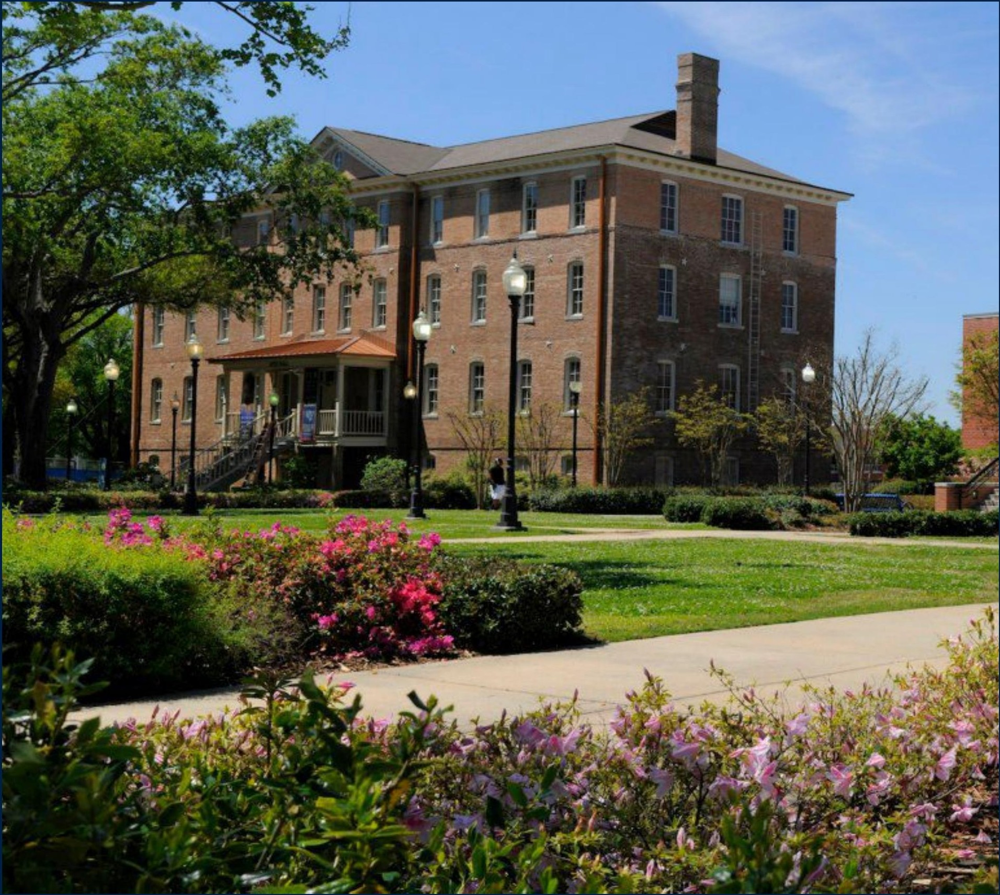
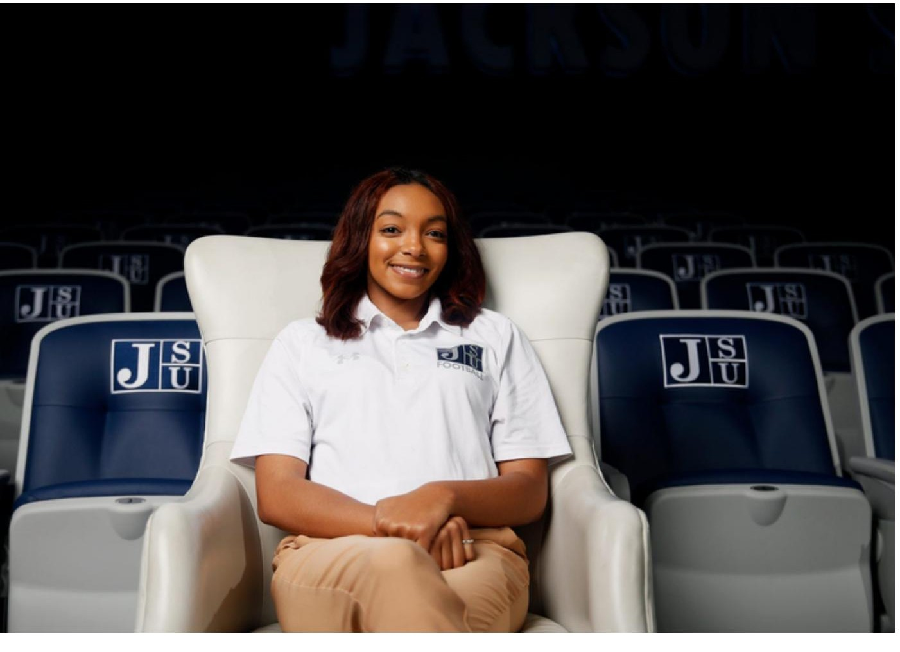
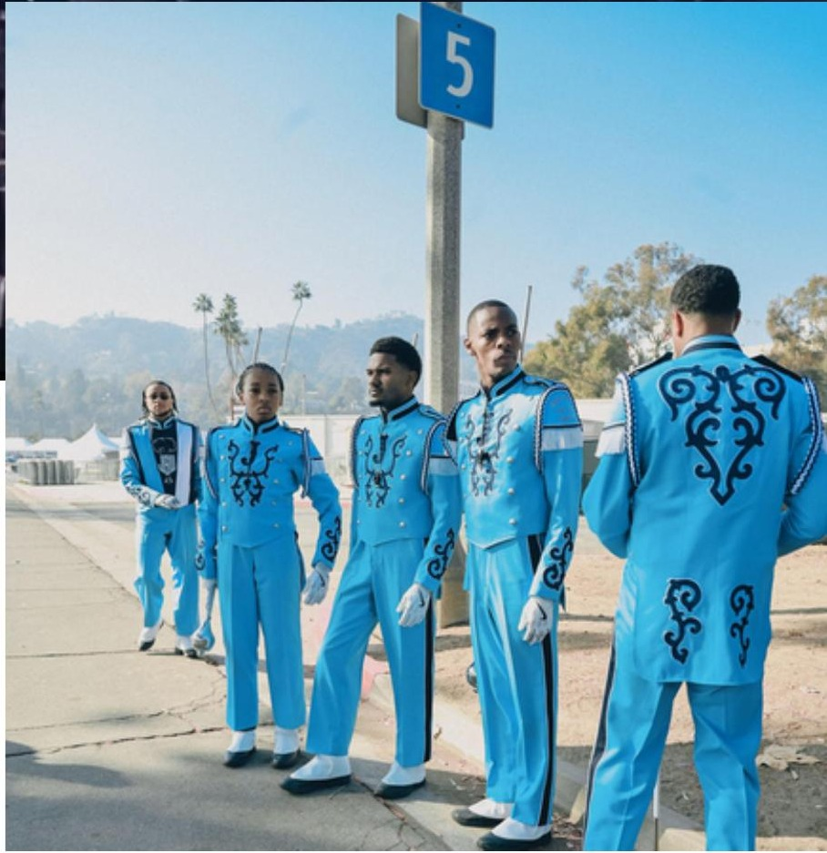

students reached through prevention and public-safety outreach
↗Fall 2023 — Spring 2026
The College
of Culture.
A living portrait of scholarship, creativity, leadership and public purpose across Jackson State University’s College of Liberal Arts.
Explore the impact ↓
$4.1M+featured funding
identified in the report
identified in the report
IMPACT REPORT · 2023—2026
STUDENT SUCCESS ✦ ACADEMIC PROMINENCE ✦ RESEARCH EXCELLENCE ✦ CAMPUS CULTURE ✦ STAFF EXCELLENCE ✦
Aligned with JSU’s strategic plan
Five priorities.
One shared impact.
Select a priority to follow the people, investments and achievements moving the College forward.

01 / 05
Student Success
From opportunity to professional momentum.
29public policy internship placements
Impact at a glance
Numbers tell part
of the story.
Behind every figure is a student finding a pathway, a faculty member advancing knowledge, or a partnership serving Mississippi and beyond.
participants welcomed to the College Language Association Convention
↗students represented JSU at the national dramatic and speech arts conference
↗years of JSU history showcased through the Getty Images collaboration
↗staff and affiliated units recognized for service and sustained commitment to the College’s public mission
↗Fueling what comes next
Investment
with purpose.
Funding identified in featured stories$4.1M+Eleven separately reported investments
These figures are transcribed from featured stories in the 2023–2026 impact report. They are not a comprehensive audited total and may span different award periods.

Creativity on the global stage
Culture that
moves.
From Super Bowl LVIII to the Parade of Roses, the Sonic Boom of the South carries JSU’s identity into national arenas—grounding visibility in musical discipline, precision and tradition.
The Sonic Boom carries Jackson State’s identity into national arenas while grounding that visibility in musical discipline, precision, and tradition.
One college, many pathways
Explore the
three schools.
Choose a school to see how distinct disciplines contribute to a shared mission of cultural leadership and public impact.
Where scholarship meets creativity
Explore the departments, programs and people shaping the College’s next chapter.
Visit the College of Liberal Arts